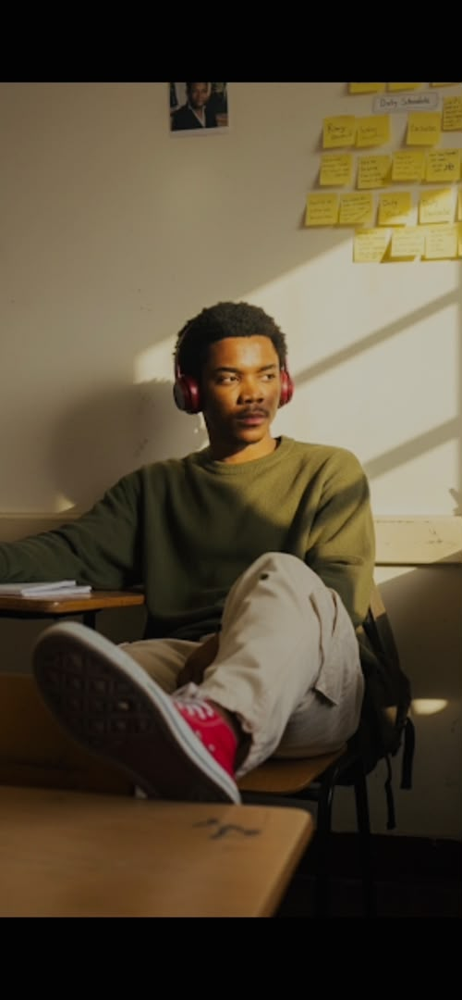
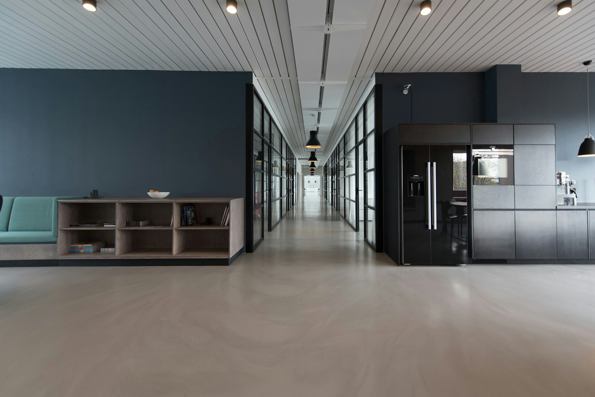

Understand the Problem
Effective development starts with understanding what users and businesses actually need.
Get to know the mindset, curiosity, and engineering approach behind my work.
My interest in software started with curiosity — wanting to understand how the interfaces and applications I use every day actually work behind a screen. That curiosity grew into a discipline: learning HTML, CSS, and JavaScript properly, then moving into Node.js so I could build the whole picture — what users see and what the server does.
What drives me is turning a real problem into working software. Learning through building — designing responsive interfaces, writing server-side logic, debugging stubborn issues, and using Git to keep work organized — is how I develop, and it's how I intend to keep growing as an engineer.

Effective development starts with understanding what users and businesses actually need.
Every interface and feature should contribute to a better user experience.
Readable code, structured architecture, and maintainability matter.
Software engineering requires continuous learning, testing, and refinement.
Clarify the goal, the users, and the constraints before anything is built.
Define the scope, data structures, and overall architecture of the solution.
Design layouts that are clear, responsive, and accessible on every screen.
Build the frontend and backend in clean, structured, reviewable code.
Validate behavior, handle errors gracefully, and test on real devices.
Configure environments and release the application so it is actually usable.
Gather feedback, fix issues, and refine the product over time.
Long hours go into every build — a quiet workspace and the right tools make them count.

I'm focused on deepening technical depth and engineering fundamentals — writing better JavaScript, building more capable Node.js services, designing APIs that scale cleanly, and understanding data structures well enough to make sound architecture decisions.
Just as important: collaboration. I care about how code is organized across a team — clear structure, meaningful commits, and pull requests that others can actually review. The goal is to keep growing into an engineer who solves genuine business challenges with reliable, scalable software.
The best way to evaluate a developer is their work. Have a look, then get in touch.